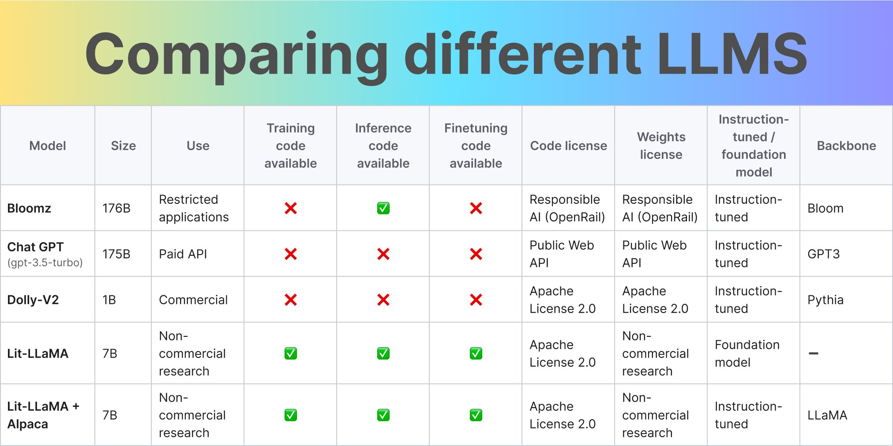

Table of Contents
Introduction
The world of technology is currently undergoing a monumental transformation, and my participation in the LLM Bootcamp was nothing short of enlightening from my perspective. The potential of AI-powered applications is causing a ripple effect in the software industry. I learned about techniques, tools, and vendors shaping the future of AI at a well-organized bootcamp where I gained valuable insights and connections.
While it’s nearly impossible to encapsulate everything I learned in a single blog post, I will attempt to highlight some of the key takeaways from this enriching experience.
The Rapid Transformation of AI-Powered Apps
Before the advent of Large Language Models (LLMs), ideas often bottlenecked on the process of training models from scratch and faced further bottlenecks in scalable deployment. However, with the availability of pretrained, promptable LLM models and APIs, it is now possible to configure and serve users in just an hour. This shift has led to an entirely new ecosystem that even experienced ML professionals are striving to understand.
Addressing the Critical Questions
As engineers delve into this new world, several questions arise. During the LLM Bootcamp, I explored answers to some of these pressing questions:
Are there any good open-source LLMs?
Yes, there are several open-source LLMs available. These models serve as a foundation for researchers and developers to build upon, experiment, and create new AI applications.
Josh Tobin had great slides on this topic, which will be release soon, but in essence it is more detailed version of the below figure

Selecting the best model for your use case depends on various factors, including:
- Out-of-the-box quality for your task
- Inference speed / latency
- Cost
- Fine-tuneability / extensibility
- Data security and license permissibility
- For most use cases, GPT-4 is an excellent starting point.
Proprietary models often offer superior quality and are more suitable for commercial use due to licensing constraints. These models can provide businesses with a competitive edge, as they are specifically designed and optimized for certain tasks and industries. Also, they come with the advantage of reduced infrastructure overhead when compared to serving open-source models.
In the past, concerns regarding broad copyright ownership over any output generated by these models have made businesses hesitant to adopt them. However, advancements in technology, such as the Azure OpenAI Service, have begun to address these concerns. OpenAI now empowers users by offering services that enable the use of proprietary models without worrying about copyright issues. This makes it easier for businesses to leverage the benefits of proprietary models while also protecting their intellectual property.
Some disclaimers on this topic:
- Security concerns: While the Azure OpenAI Service has made strides in alleviating copyright concerns, it’s important to acknowledge that security concerns still remain. As with any cloud-based service, there is always the potential risk of data breaches and unauthorized access to sensitive information. To mitigate these risks, OpenAI and Azure have implemented rigorous security measures and protocols, such as data encryption and access control. However, businesses should still exercise caution and perform their own due diligence when evaluating the suitability of these services for their needs.
- No Service Level Agreements (SLAs) yet: There is currently no commitment from OpenAI regarding when SLAs will be provided for these APIs. SLAs typically offer guarantees on service availability, performance, and support response times, which can be crucial for businesses that depend on these services for mission-critical applications. Without SLAs in place, businesses may find it challenging to assess the reliability and stability of these APIs, making it difficult to plan and budget for their integration into commercial projects.
- Upcoming regulations: Additionally, it’s worth noting that new regulations are on the horizon that could impact the use of proprietary models in certain regions. The European Union is currently working on the Artificial Intelligence Act (AI Act), which aims to create a legal framework for AI systems, including proprietary models. This legislation may introduce new requirements for businesses using AI, such as transparency, accountability, and data protection. As these regulations evolve, businesses should stay informed and adapt their AI strategies accordingly.
On the other hand, open-source models are a more fitting choice if you require extensive customization and want to ensure data security. They provide greater flexibility in terms of modification and adaptation to meet specific project requirements.
Adding to the previous discussion on selecting the best LLM for your use case, here are some recommendations for most projects:
- Start with GPT-4: This will help you develop a proof of concept to assess the feasibility of your task, similar to prototyping in Python.
- Consider “downsizing” if cost or latency is a factor: GPT-3.5 and Claude are both good choices with comparable performance. For even faster and cheaper alternatives, explore options provided by any LLM vendor, with Anthropic’s offering being the most “modern” choice.
- Opt for Cohere if you need to fine-tune your model: Cohere allows greater flexibility in adjusting the model to better suit your specific needs.
- Use open-source models only when absolutely necessary: Although the open-source landscape is evolving rapidly and will likely become a more viable option in the future, for now, it’s advisable to use these models only if they are essential for your project.
Personally I find it quite distressing that LLAMA paper results could not be reproduced.
By considering these recommendations, you can make an informed decision about which LLM is most suitable for your project, balancing factors such as cost, performance, customization, and data security.
We can expect GPT-3.5 quality to be available in open-source models until the end of 2023.
What is my moat if I rely on OpenAI APIs?
Utilizing OpenAI APIs provides you with access to state-of-the-art AI technology and regular model updates, which can help you maintain a competitive edge in the market. However, your competitive advantage, or “moat” comes from your unique implementation of the technology and the value-added services you deliver to your customers.
For instance context plays a crucial role in providing LLMs with unique and up-to-date information, but its capacity is limited. To make the most of this limited context, consider augmenting the language model through various methods:
- Augment with a larger corpus: Leverage additional data sources to enrich the context and improve the AI’s understanding of your specific domain or use case.
- Augment with more LLM calls: Make multiple calls to the LLM with different inputs or parameters to generate a diverse range of responses, which can then be combined or refined to produce a more accurate output.
- Augment with external sources: Integrate information from other sources, such as databases, APIs, or domain-specific knowledge bases, to enhance the context and further tailor the AI’s output to your needs.
By effectively combining OpenAI APIs with these augmentation strategies, you can create unique, high-value solutions that differentiate your offerings from competitors and strengthen your competitive advantage.
Is Prompt Engineering some kind of sick joke?
In the context of AI and LLMs, a “prompt” refers to the text input given to a language model. “Prompt engineering” is the skillful process of crafting that input text to achieve desired results from the model.
Lilian Weng has a great blogpost about it here, and she notes that most papers on prompt engineering are tricks that can be explained in a few sentences.
While the term “prompt engineering” may sound whimsical or perplexing, it is a crucial aspect of working with LLMs. By carefully designing prompts, you can harness the power of language models to generate valuable insights, creative ideas, and solutions to complex problems.
Prompts can be thought of as gateways to the vast knowledge and capabilities of AI language models.
They allow you to tap into the potential of these sophisticated systems, but only when you adhere to certain guidelines and best practices.
Despite the seemingly mysterious nature of prompts, they are an essential tool in the AI practitioner’s toolkit, and learning how to master prompt engineering will enable you to unlock the full potential of LLMs in various applications.
How can I gather and use feedback from users?
User feedback is crucial for improving your AI-powered applications. To gather and use feedback effectively, consider implementing feedback loops, in-app surveys, and user testing to gain insights into user preferences and any potential shortcomings of the AI.
One approach to incorporating user feedback is to ask an LLM whether the new answer addresses the feedback provided for the old answer. Aim for low-friction, high-signal feedback methods that easily integrate into the user’s workflow, such as the Accept changes or Thumbs up/down patterns. Longer-form feedback also plays a role in refining AI performance.
Identify themes in user feedback that the model does not address, which are often discovered by humans. Adjust the prompt to account for these themes through prompt engineering or by changing the context. The automation of this process is still an open question.
Should I be able to code a Transformer from scratch?
While it’s not mandatory, having a deep understanding of the underlying architecture, such as Transformers, can help you better utilize LLMs and troubleshoot issues. However, focusing on practical applications and use cases is often more valuable than delving solely into theoretical aspects.
For example, during a fireside chat, Peter Welinder, VP of Product and Partnerships at OpenAI, mentioned that when they first built the API, the inference was slow, but in just three months, they were able to improve the inference speed by 100x. This example illustrates how understanding the underlying architecture, combined with using tools like triton, can help you enhance the performance of your AI applications.
For instance, you might need to fine-tune LLMs in certain situations. Here are some recommendations:
Using GPT-4 might eliminate the need for fine-tuning in most cases.
Reasons to consider fine-tuning:
- You need to deploy smaller models due to resource constraints.
- You have a large amount of data, and retrieval-based approaches are not performing well.
Low-rank updates or parameter-efficient tuning techniques can make fine-tuning more accessible, allowing you to optimize the LLM for specific use cases without in-depth knowledge of Transformer coding.
Also this is a there is recent great survey on parameter-efficient tuning.
Ultimately, striking a balance between understanding the underlying principles and focusing on practical applications will empower you to make the most of LLMs in your projects.
How exactly am I supposed to test these damn things?
Testing LLMs can be challenging, but it is essential to ensure the quality of your AI applications. Employ a combination of manual and automated testing, focus on edge cases, and collaborate with domain experts to validate the AI’s output for accuracy and relevance.
As you may already know, LLMs are prone to making mistakes, and improving one aspect of your model may inadvertently compromise another. If people rely on your model, they trust you to maintain performance on their task. Since LLMs are trained on the internet, there is always a risk of drift, and qualitative success can be hard to measure. Additionally, diversity of behaviors means aggregate metrics may not be sufficient.
Test coverage and distribution shift are closely related concepts. Distribution shift measures how far the test distribution is from a reference distribution and is used to assess data changes. Test coverage measures how well your evaluation set covers your production data and is used to find more helpful evaluation data.
A key idea in LLM testing is using one LLM to evaluate another. This enables automatic evaluation, which can unlock parallel experimentation. However, you should still conduct some manual checks. Types of feedback to consider include thumbs up/down, written feedback, and corrected answers.
By implementing a comprehensive testing strategy that combines automated and manual testing, as well as incorporating feedback mechanisms, you can ensure the quality and performance of your AI applications remain high.
Conclusion
While the insights shared in this blog post are valuable today, it’s essential to acknowledge that the landscape is continually changing. And as we continue to witness the growth and impact of LLMs and AI in general, it’s crucial to remain agile and open to new ideas. The key takeaways from the LLM Bootcamp and related discussions serve as a stepping stone for understanding the current state of the field, but it’s up to you to keep pushing the boundaries and exploring new ways to harness the power of these transformative technologies.
In addition to this post, I have also compiled a separate write-up on a panel discussion focused on Building a Sustainable Business which provides insights on how to navigate the challenges and opportunities in this burgeoning industry.
In conclusion, I want to express my heartfelt thanks to all the readers who have taken the time to read and engage with this blog post. Your interest and curiosity motivate me to keep sharing my experiences and learnings in this rapidly evolving field. I appreciate your support, and I look forward to sharing more insights with you in the future!
Acknowledgements
Thanks to Eugene Yan for comments on the draft.
Citation
Cited as:
@misc{muhtasham2023llm,
title={A Deep Dive into the LLM Bootcamp Experience: Revolutionizing AI-Powered Applications},
author={Muhtasham, Oblokulov},
journal={muhtasham.github.io},
year={2023},
month={Apr},
url={https://muhtasham.github.io/blog/posts/llm-bootcamp/}
}